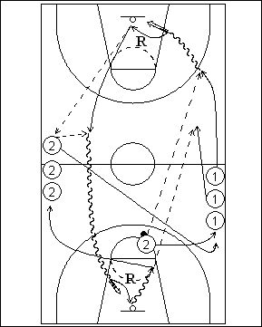

Catégorie : FASTBREAK (Fb-007)
Déroulement
- Deux files de joueurs à hauteur de la ligne médiane. Un seul ballon pour un joueur de la file 2 au niveau d’une ligne de lancers francs.
- Le premier joueur de la file 1 démarre et reçoit la longue passe. Il réalise un lay-up, effectue son rebond, fait aussitôt la passe de dégagement au premier joueur de la file 2, reçoit le ballon en retour et effectue un deuxième lay-up vers l’autre panneau. Il prend à nouveau son rebond et fait la longue passe au deuxième joueur de la file 1. Donc chaque joueur de la file 1 réalise deux lay-ups, deux rebonds et la longue passe au joueur suivant.
- Après cette passe, 1 va dans la file 2. Le premier joueur de la file 2 va derrière la file 1.
Coaching points
- C’est un exercice de contre-attaque; il convient donc d’insister sur les composantes du fastbreak : précision des longues passes, rapidité des dribbles, réussite des lay-ups, vitesse d’exécution.
- Avec un grand nombre de joueurs, on peut ajouter un deuxième ballon.